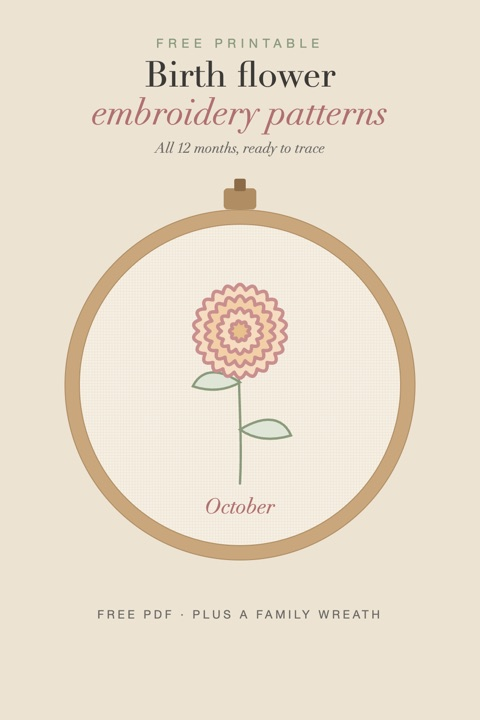

Free Birth Flower Embroidery Patterns: All 12 Months
2026-10-03
Written by the team behind Aquum, a small birth flower gift shop. How we make money.

A birth flower stitched by hand is one of those gifts that people keep for good: a hoop on the wall of a nursery, a patch on a denim jacket, a little flower on the corner of a handkerchief. These patterns give you every month's flower as a clean outline, ready to trace onto fabric.
Download the free birth flower embroidery patterns (PDF)
Thirteen letter-size pages:
- Twelve patterns, one per month, each sized to fit a 6-inch hoop, with the month's name to stitch underneath.
- Suggested thread colors for each flower and the stitches to use.
- A family wreath with all twelve flowers in a circle for an 8-inch hoop, with "Our family" and a year in the middle. Stitch only the months of the people in your family, or all twelve.
How to transfer the pattern
- Print at 100% or "actual size". The dashed circle shows the edge of the hoop.
- Light fabric (cotton, linen): tape the page to a bright window, tape the fabric over it and trace with a water-soluble or heat-erasable pen.
- Dark or thick fabric: print or trace onto a water-soluble stabilizer, stick it on the fabric, stitch through it and rinse it away when you finish.
- Hoop it: center the design, tighten the hoop so the fabric is drum-tight, and start with the stem.
Stitches
| Part | Stitch | Strands |
|---|---|---|
| Outlines and stems | Back stitch or stem stitch | 2 |
| Petals | Satin stitch or long-and-short | 2–3 |
| Centers and small dots | French knots | 2–3 |
| Leaves | Fishbone or satin stitch | 2 |
| Month name | Split stitch or back stitch | 1–2 |
New to embroidery? Stitch the whole pattern in back stitch first. A single outline in one color looks lovely on its own, and you can fill the petals on the next one.
Thread colors
Each page suggests three or four colors close to the real flower: carnation pink for January, violet and a touch of yellow for February, golden yellow for March, and so on. Any brand of six-strand cotton floss works. Pick shades you like next to your fabric: a white daisy on oatmeal linen and a white one on navy cotton say quite different things.
If you'd rather go by meaning, our birth flower color meanings guide explains what each color says.
Ideas for what to make
- A hoop for a new baby: their birth flower, their name and birth date. More ideas in our new mom gift guide.
- A family hoop: the wreath page, with the flowers of everyone in the house. Or build a family birth flower bouquet first to see how they look together.
- Grandma's hoop: her grandchildren's flowers, for Mother's Day or Christmas. See our gifts for grandma.
- On clothes: a single flower on a shirt pocket, a cuff or a tote bag.
- For an anniversary: two flowers, one for each of you, with your date. More in anniversary gifts.
Not sure which flower is theirs? The birth flower finder tells you from a birthday, and what each flower means is here, from A to Z.
Want all 23 flowers? The full embroidery pattern pack adds the eleven second birth flowers, 23 mini motifs for small hoops and pockets, and a second family wreath: 29 pages for US$5.
These patterns are for personal use: stitch as many gifts as you like. Please don't sell the pattern or share the file on other sites; link to this page instead.
More free printables: all our birth flower printables in one place.